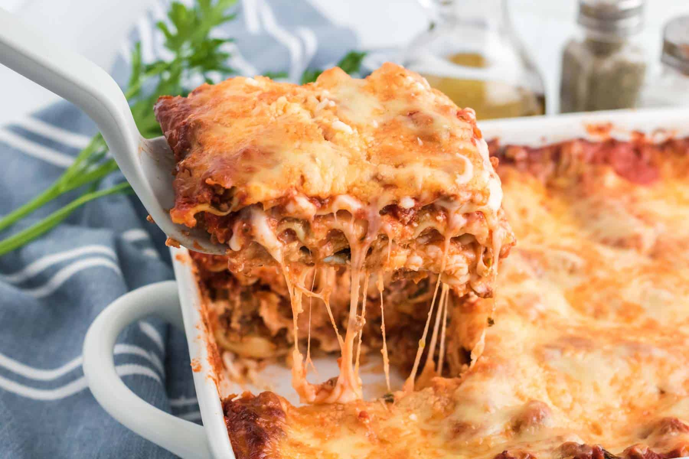

lasagna

description
A classic pasta made with layers of lasagna noodles, hearty meat sauce, creamy ricotta, and mozzarella cheese baked to hot, gooey deliciousness.
ingredients
- lasagna noodles
- sauce of your preference
- italian seasonings
- ricotta cheese
- mozzarella cheese
- cook pasta
- once pasta is al dente, use to make a layer of noodles in deep baking pan
- spread layer of ricotta on noodles
- sprinkle mozzarella cheese on top
- layer with sauce
- reapeast steps 2-5 until you have several layers
- bake in oven at 350 for 10-15 minutes, or until cheese is melted to your desire